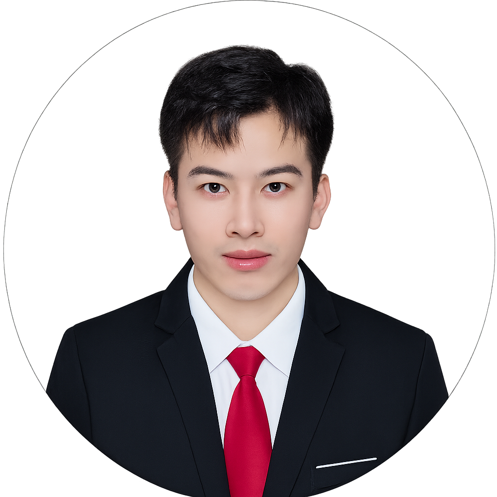

01
柔性压力传感器
Flexible pressure sensors
通过微结构设计实现电容/电阻型柔性压力传感器的线性度与灵敏度协同优化，用于可穿戴监测与人机交互。
Ming Lei / Academic website
Flexible sensing. Intelligent interfaces.
围绕柔性材料与微结构设计，研究压力感知、磁性人机交互及光纤频率检测，探索可穿戴器件中的力学响应与信号读出。

About me
本人目前在东北大学信息科学与工程学院从事博士后研究工作（合作导师：张亚男教授）。研究方向包括可穿戴柔性压力传感器、磁性人机交互器件及基于光纤结构的频率检测。主要围绕微结构设计提升压力传感器的线性度与灵敏度，并利用光纤结构监测柔性材料本征频率变化，实现高精度的人机交互。
Selected work
Advanced Functional Materials · 2025
葫芦形多梯度单元，用于生理压力范围内的柔性压力传感。
Advanced Materials Technologies · 2025
双穹顶介电泡沫与模量梯度设计，实现宽量程线性电容压力检测。
ACS Nano · 2022
兼具透气与防水性能的三维电子皮肤，分别感知压力和应变。
Research interests
微结构设计 · 力学响应 · 信号感知
Flexible pressure sensors
通过微结构设计实现电容/电阻型柔性压力传感器的线性度与灵敏度协同优化，用于可穿戴监测与人机交互。
Magnetic human–machine interfaces
设计柔性磁性结构与磁响应单元，构建兼具稳定性与高灵敏度的磁性人机交互界面。
Optical fiber frequency sensing
将光纤结构耦合于柔性材料，利用本征频率变化实现状态识别与高精度人机交互。
Publications & patents
Chemical Engineering Journal , 2026.一作及通讯作者
Advanced Functional Materials , 2025, e27243.一作及通讯作者
Advanced Materials Technologies, 2025, e01289.一作及通讯作者
Nanoscale, 2025.一作及通讯作者
Materials Today Bio, 2023, 23, 100787.一作及通讯作者
Advanced Materials Technologies, 2023, 8, 2301077. (AdvancedScience News)一作及通讯作者
ACS Nano, 2022, 16 (8), 12620–12634. (Reported by Polymer.cn)一作及通讯作者
Sensors and Actuators B: Chemical, 2018, 226–232.一作及通讯作者
IEEE Sensors Journal, 2018, 7499–7504.一作及通讯作者
Microsystems & Nanoengineering, 2026.主要作者
Advanced Materials Technologies ,2026, e71046.主要作者
Small, 202406564.主要作者
ACS Applied Materials & Interfaces, 2024, 16, 68465–68477.主要作者
Applied Materials Today, 2025, 42, 102614.主要作者
ACS Nano, 2025, 19, 25, 23465–23478.主要作者
Chemical Engineering Journal, 2025, 521, 167133.主要作者
Exploration, 2023. (News)主要作者
Advanced Intelligent Systems, 2023, 2300291.主要作者
Langmuir, 2022, 38, 9, 2942–2953.主要作者
Chemical Engineering Journal, 2022, 432, 134400.主要作者
Small, 2021, 202103312.主要作者
Journal of Materials Chemistry A, 2021, 9, 15282–15293.主要作者
Instrumentation Science & Technology, 2018.主要作者
Sensors and Actuators A, 2018.主要作者
专利申请号：201810039338.6，2018.专利
专利申请号：201810316652.4，2018.专利
专利申请号：201810039992.7，2018.专利
没有找到符合条件的成果。
† 共同第一作者 * 通讯作者
News & updates
研究进展与学术交流
Academic journey
2024/10 – 至今
博士后研究员，从事柔性压力传感器、磁性人机交互器件及光纤频率检测相关研究。
2024/06 – 2024/10
研究助理，参与柔性压力传感器设计等工作。
2020/08 – 2024/06
哲学博士 · 应用物理及材料工程专业 · 导师：周冰朴副教授 · 柔性电子与智能界面实验室。
2016/09 – 2018/01
工学硕士 · 检测技术与自动化装置 · 导师：赵勇教授（长江学者，国家杰青，东北大学秦皇岛分校校长）。
2012/09 – 2016/07
工学学士 · 测控技术与仪器 · 导师：盖建新教授（测控技术与通信工程院副院长）。
Get in touch
欢迎就柔性传感、可穿戴器件与人机交互交流。